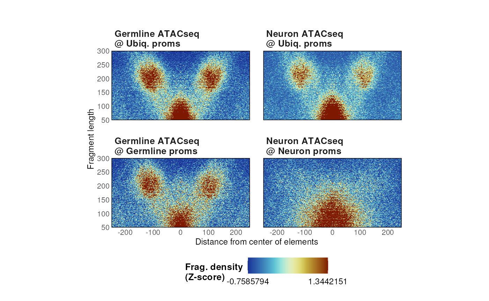

Importing data
Paired-end .bam files are read using the importPEBamFiles() function as follows:
library(VplotR) data(ce11_proms) ce11_proms fragments <- importPEBamFiles( 'ATAC-seq-mapped-fragments.bam', where = ce11_proms, shift_ATAC_fragments = TRUE )
Note: to allow for an accurate background normalization, the where argument should be omitted. If no background normalization is needed, the where argument can be used to fasten the import of bam fragments.
Several datasets are available for this package:
- Sets of tissue-specific ATAC-seq experiments in young adult C. elegans (Serizay et al., 2020):
data(ce11_proms) ce11_proms #> GRanges object with 17458 ranges and 3 metadata columns: #> seqnames ranges strand | TSS.fwd TSS.rev which.tissues #> <Rle> <IRanges> <Rle> | <numeric> <numeric> <factor> #> [1] chrI 11273-11423 + | 11294 11416 Intest. #> [2] chrI 11273-11423 - | 11294 11416 Intest. #> [3] chrI 26903-27053 - | 27038 26901 Ubiq. #> [4] chrI 36019-36169 - | 36112 36028 Intest. #> [5] chrI 42127-42277 - | 42216 42119 Soma #> ... ... ... ... . ... ... ... #> [17454] chrX 17670496-17670646 + | 17670678 17670478 Muscle #> [17455] chrX 17684894-17685044 - | 17684919 17684932 Hypod. #> [17456] chrX 17686030-17686180 - | 17686189 17686064 Unclassified #> [17457] chrX 17694789-17694939 + | 17694962 17694934 Intest. #> [17458] chrX 17711839-17711989 - | 17711974 17711854 Germline #> ------- #> seqinfo: 6 sequences from an unspecified genome; no seqlengths data(ATAC_ce11_Serizay2020) head(ATAC_ce11_Serizay2020) #> $Germline #> GRanges object with 462371 ranges and 0 metadata columns: #> seqnames ranges strand #> <Rle> <IRanges> <Rle> #> [1] chrI 426-514 + #> [2] chrI 3588-3854 + #> [3] chrI 3640-3798 + #> [4] chrI 3650-3694 + #> [5] chrI 3732-3863 + #> ... ... ... ... #> [462367] chrX 17712277-17712469 - #> [462368] chrX 17712279-17712342 - #> [462369] chrX 17712282-17712565 - #> [462370] chrX 17712285-17712384 - #> [462371] chrX 17712287-17712576 - #> ------- #> seqinfo: 7 sequences from an unspecified genome; no seqlengths #> #> $Neurons #> GRanges object with 367935 ranges and 0 metadata columns: #> seqnames ranges strand #> <Rle> <IRanges> <Rle> #> [1] chrI 4011-4241 + #> [2] chrI 7397-7614 + #> [3] chrI 11279-11502 + #> [4] chrI 12744-12819 + #> [5] chrI 14381-14433 + #> ... ... ... ... #> [367931] chrX 17687948-17687982 - #> [367932] chrX 17699614-17699853 - #> [367933] chrX 17706798-17706923 - #> [367934] chrX 17708264-17708347 - #> [367935] chrX 17709920-17710007 - #> ------- #> seqinfo: 7 sequences from an unspecified genome; no seqlengths
- MNase-seq experiment in yeast (Henikoff et al., 2011) and ABF1 binding sites:
data(ABF1_sacCer3) ABF1_sacCer3 #> GRanges object with 567 ranges and 2 metadata columns: #> seqnames ranges strand | relScore ID #> <Rle> <IRanges> <Rle> | <numeric> <Rle> #> [1] chrIV 392624-392639 + | 0.979866 MA0265.1 #> [2] chrIV 1196424-1196439 + | 0.979866 MA0265.1 #> [3] chrXIV 400687-400702 + | 0.979866 MA0265.1 #> [4] chrII 216540-216555 - | 0.978608 MA0265.1 #> [5] chrXVI 95317-95332 - | 0.974833 MA0265.1 #> ... ... ... ... . ... ... #> [563] chrIV 1402786-1402801 + | 0.900182 MA0265.1 #> [564] chrX 545320-545335 + | 0.900182 MA0265.1 #> [565] chrXI 571301-571316 - | 0.900182 MA0265.1 #> [566] chrXIV 140631-140646 - | 0.900182 MA0265.1 #> [567] chrXVI 919179-919194 - | 0.900182 MA0265.1 #> ------- #> seqinfo: 17 sequences from an unspecified genome; no seqlengths data(MNase_sacCer3_Henikoff2011) head(MNase_sacCer3_Henikoff2011) #> GRanges object with 6 ranges and 0 metadata columns: #> seqnames ranges strand #> <Rle> <IRanges> <Rle> #> [1] chrI 2-116 + #> [2] chrI 14-66 + #> [3] chrI 15-134 + #> [4] chrI 54-167 + #> [5] chrI 66-104 + #> [6] chrI 66-108 + #> ------- #> seqinfo: 17 sequences from an unspecified genome
- ATAC-seq in human cells (Omni-ATAC, Corces et al., 2017) and CTCF binding sites:
Fragment size distribution
A preliminary control to check the distribution of fragment sizes (regardless of their location relative to genomic loci) can be performed using the getFragmentsDistribution() function.
df <- getFragmentsDistribution( MNase_sacCer3_Henikoff2011, ABF1_sacCer3 ) #> Warning in as.cls(x): NAs introduced by coercion #> Warning in as.cls(x): NAs introduced by coercion #> Warning in as.cls(x): NAs introduced by coercion p <- ggplot(df, aes(x = x, y = y)) + geom_line() + theme_ggplot2() p #> Warning: Removed 2 row(s) containing missing values (geom_path).

Vplot(s)
Single Vplot
Once data is imported, a V-plot of paired-end fragments over loci of interest is generated using the plotVmat() function:
p <- plotVmat(x = MNase_sacCer3_Henikoff2011, granges = ABF1_sacCer3) #> Computing V-mat #> Normalizing the matrix #> No normalization applied #> Smoothing the matrix p
Multiple Vplots
The generation of multiple V-plots can be parallelized using a list of parameters:
list_params <- list( "MNase\n@ ABF1" = list(MNase_sacCer3_Henikoff2011, ABF1_sacCer3), "MNase\n@ random loci" = list( MNase_sacCer3_Henikoff2011, sampleGRanges(ABF1_sacCer3) ) ) p <- plotVmat( list_params, cores = 1 ) #> - Processing sample 1/2 #> - Processing sample 2/2 p

For instance, ATAC-seq fragment density can be visualized at different classes of ubiquitous and tissue-specific promoters in C. elegans.
list_params <- list( "Germline ATACseq\n@ Ubiq. proms" = list( ATAC_ce11_Serizay2020[['Germline']], ce11_proms[ce11_proms$which.tissues == 'Ubiq.'] ), "Germline ATACseq\n@ Germline proms" = list( ATAC_ce11_Serizay2020[['Germline']], ce11_proms[ce11_proms$which.tissues == 'Germline'] ), "Neuron ATACseq\n@ Ubiq. proms" = list( ATAC_ce11_Serizay2020[['Neurons']], ce11_proms[ce11_proms$which.tissues == 'Ubiq.'] ), "Neuron ATACseq\n@ Neuron proms" = list( ATAC_ce11_Serizay2020[['Neurons']], ce11_proms[ce11_proms$which.tissues == 'Neurons'] ) ) p <- plotVmat( list_params, cores = 1, nrow = 2, ncol = 5 ) #> - Processing sample 1/4 #> - Processing sample 2/4 #> - Processing sample 3/4 #> - Processing sample 4/4 p

Vplots normalization
Different normalization approaches are available using the normFun argument.
# No normalization p <- plotVmat( list_params, cores = 1, nrow = 2, ncol = 5, verbose = FALSE, normFun = '' ) #> Computing V-mat #> Normalizing the matrix #> No normalization applied #> Smoothing the matrix #> Computing V-mat #> Normalizing the matrix #> No normalization applied #> Smoothing the matrix #> Computing V-mat #> Normalizing the matrix #> No normalization applied #> Smoothing the matrix #> Computing V-mat #> Normalizing the matrix #> No normalization applied #> Smoothing the matrix p

By default, plots are normalized by the library depth of the sequencing run
and by the number of loci used to compute fragment density.
# Library depth + number of loci of interest (default) p <- plotVmat( list_params, cores = 1, nrow = 2, ncol = 5, verbose = FALSE, normFun = 'libdepth+nloci' ) #> Computing V-mat #> Normalizing the matrix #> Computing raw library depth #> Dividing Vmat by its number of loci #> Smoothing the matrix #> Computing V-mat #> Normalizing the matrix #> Computing raw library depth #> Dividing Vmat by its number of loci #> Smoothing the matrix #> Computing V-mat #> Normalizing the matrix #> Computing raw library depth #> Dividing Vmat by its number of loci #> Smoothing the matrix #> Computing V-mat #> Normalizing the matrix #> Computing raw library depth #> Dividing Vmat by its number of loci #> Smoothing the matrix p

Alternatively, heatmaps can be internally z-scored or scaled to a specific quantile.
# Zscore p <- plotVmat( list_params, cores = 1, nrow = 2, ncol = 5, verbose = FALSE, normFun = 'zscore' ) #> Computing V-mat #> Normalizing the matrix #> Smoothing the matrix #> Computing V-mat #> Normalizing the matrix #> Smoothing the matrix #> Computing V-mat #> Normalizing the matrix #> Smoothing the matrix #> Computing V-mat #> Normalizing the matrix #> Smoothing the matrix p

# Quantile p <- plotVmat( list_params, cores = 1, nrow = 2, ncol = 5, verbose = FALSE, normFun = 'quantile', s = 0.99 ) #> Computing V-mat #> Normalizing the matrix #> Smoothing the matrix #> Computing V-mat #> Normalizing the matrix #> Smoothing the matrix #> Computing V-mat #> Normalizing the matrix #> Smoothing the matrix #> Computing V-mat #> Normalizing the matrix #> Smoothing the matrix p

Footprints
VplotR also implements a function to profile the footprint from MNase or ATAC-seq over sets of genomic loci. For instance, CTCF is known for its ~40-bp large footprint at its binding loci.
p <- plotFootprint( ATAC_hg38, CTCF_hg38 ) p

Nucleosome enrichment quantification
Finally, the nucleosomeEnrichment() function is useful to quantify the enrichment of flanking nucleosomes at promoters, usually from ATAC-seq datasets.
germline_proms <- ce11_proms[ce11_proms$which.tissues == "Germline"] nuc_enrich_germline <- nucleosomeEnrichment( ATAC_ce11_Serizay2020[['Germline']], germline_proms ) #> Computing Vmat... #> Computing background... #> Computing enrichment... nuc_enrich_germline$fisher_test #> #> Fisher's Exact Test for Count Data #> #> data: matrix(vec, ncol = 2) #> p-value < 2.2e-16 #> alternative hypothesis: true odds ratio is not equal to 1 #> 95 percent confidence interval: #> 2.156267 3.142163 #> sample estimates: #> odds ratio #> 2.601888 nuc_enrich_germline$plot

Session Info
sessionInfo() #> R version 4.0.0 (2020-04-24) #> Platform: x86_64-pc-linux-gnu (64-bit) #> Running under: Ubuntu 14.04.5 LTS #> #> Matrix products: default #> BLAS: /home/travis/R-bin/lib/R/lib/libRblas.so #> LAPACK: /home/travis/R-bin/lib/R/lib/libRlapack.so #> #> locale: #> [1] LC_CTYPE=en_US.UTF-8 LC_NUMERIC=C #> [3] LC_TIME=en_US.UTF-8 LC_COLLATE=en_US.UTF-8 #> [5] LC_MONETARY=en_US.UTF-8 LC_MESSAGES=en_US.UTF-8 #> [7] LC_PAPER=en_US.UTF-8 LC_NAME=C #> [9] LC_ADDRESS=C LC_TELEPHONE=C #> [11] LC_MEASUREMENT=en_US.UTF-8 LC_IDENTIFICATION=C #> #> attached base packages: #> [1] parallel stats4 stats graphics grDevices utils datasets #> [8] methods base #> #> other attached packages: #> [1] VplotR_0.99.2 magrittr_1.5 ggplot2_3.3.2 #> [4] GenomicRanges_1.41.5 GenomeInfoDb_1.25.8 IRanges_2.23.10 #> [7] S4Vectors_0.27.12 BiocGenerics_0.35.4 #> #> loaded via a namespace (and not attached): #> [1] Rcpp_1.0.5 plyr_1.8.6 RColorBrewer_1.1-2 #> [4] pillar_1.4.6 compiler_4.0.0 XVector_0.29.3 #> [7] bitops_1.0-6 tools_4.0.0 zlibbioc_1.35.0 #> [10] digest_0.6.25 lattice_0.20-41 evaluate_0.14 #> [13] memoise_1.1.0 lifecycle_0.2.0 tibble_3.0.3 #> [16] gtable_0.3.0 pkgconfig_2.0.3 rlang_0.4.7 #> [19] yaml_2.2.1 pkgdown_1.5.1 xfun_0.15 #> [22] GenomeInfoDbData_1.2.3 withr_2.2.0 stringr_1.4.0 #> [25] knitr_1.29 Biostrings_2.57.2 vctrs_0.3.2 #> [28] desc_1.2.0 fs_1.4.2 cowplot_1.0.0 #> [31] rprojroot_1.3-2 grid_4.0.0 glue_1.4.1 #> [34] R6_2.4.1 BiocParallel_1.23.2 rmarkdown_2.3 #> [37] farver_2.0.3 reshape2_1.4.4 Rsamtools_2.5.3 #> [40] backports_1.1.8 scales_1.1.1 htmltools_0.5.0 #> [43] ellipsis_0.3.1 MASS_7.3-51.5 assertthat_0.2.1 #> [46] colorspace_1.4-1 labeling_0.3 stringi_1.4.6 #> [49] RCurl_1.98-1.2 munsell_0.5.0 crayon_1.3.4 #> [52] zoo_1.8-8